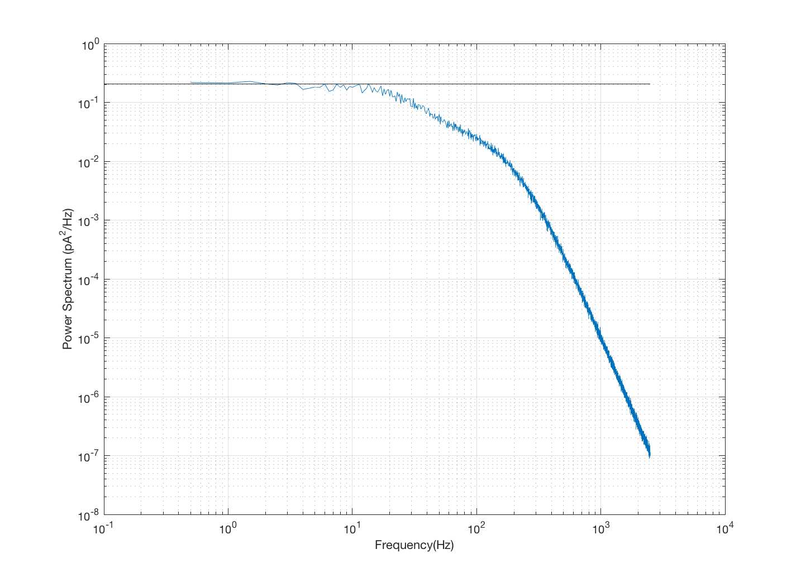

t_osNoise
Illustrate the noise spectrum from the outer segment biophysical model we use for converting photon absorptions to photo current.
BW ISETBIO Team, 2016
Contents
Show that the mean is near zero
nSamp = 10000; deltaT = 1/5000; % We are putting in absorption rate of zero for a 10 x 10 array of cones, % over the nSamp sample times. % The timing is 0.2 ms (1/5000) [noise, freq] = osAddNoise(zeros(10,10,nSamp), 'sampTime',deltaT); fprintf('Mean noise should be close to zero: %f (pA)\n',mean(noise(:)));
Mean noise should be close to zero: 0.018690 (pA)
Calculate the spectrum
% Notes from FR. % % This formula for the noise frequency response amplitude (from Fred R) % The 2 is there for some negative frequency, and the correction for the % number of time samples is the usual FFT correction. noiseF = squeeze(mean(mean(abs(fft(noise, [], 3)*(2/nSamp)).^2))); vcNewGraphWin; loglog(freq, noiseF(1:length(freq))); line('Xdata',[0.1 freq(end)],'Ydata',[.205 .205]); xlabel('Frequency(Hz)'); ylabel('Power Spectrum (pA^2/Hz)'); grid on